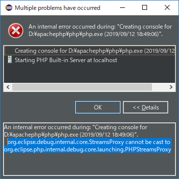
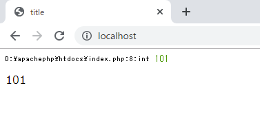
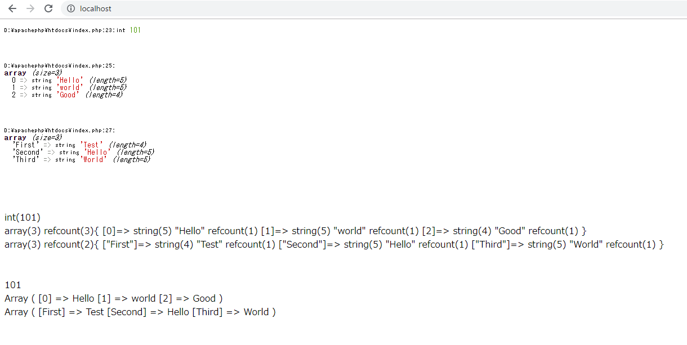

[PHP] データ確認関数(var_dump, debug_zval_dump, print_r)
こんにちは。明月です。
プログラムを開発する時にデータの流れを確認しなければならない時があります。その流れのポイントを取って確認する作業をデバッグと言います。
簡単なウェブページを作成することならデバッグなしでも値の流れを確認できて、作業ができるかもしれませんが、データベースからデータを検索して取得する流れだと思えば、データの中間でデータが上手く入れ込むか、上手く取得するかを確認することや、もし予想以外のデータがあり、途中で何が間違っているかの確認が必要な時がありますね。
JavaやC#の場合はいい開発ツール(IDE)があり、BreakPointでデータ追跡が可能ですが、PHPの場合はスクリプト言語なので、デバックができるいい開発ツールがないと思います。
先にグーグルで検索してみたらZendStudioがありますね。まだ使ったことがないのでどうかなよく知りません。
link - https://www.zend.com/en/downloads
今はPHPのIDEツールではJavaでも使うIDEツールのeclipseを使っていますが、これがPHPのデバックができないです。
正確に言うとできないことではないですが、筆者の場合は使ったことがないです。
link - https://xdebug.org/
link - https://wiki.eclipse.org/Debugging_using_XDebug
link - https://yard.tistory.com/entry/Eclipse-PHP-Debug-

私もデバックができるように設定してみましたが、結局失敗しました。
stack-overflowの説明とおりだと、eclipse自体にバッグがありそうですね。もし、できる方がいらっしゃいなら教えてください。
後でZendStudioで挑戦してみなければならないですね。(ZendStudioが無料ではなく、有料です。)
筆者の場合は今までPHPを開発する時に別にデバックをしながら開発したことではないです。今はeclipseが慣れているから使いますが、10年前はただnotepad++で開発しました。
PHPはスクリプトなので、ソース修正が簡単だし、すぐ確認できるので「var_dump」の関数を利用して確認ができます。
<?php
$title = "title";
$data = 1;
for($i = 0; $i < 100; $i++) {
$data++;
}
// $dataの値を確認しましょう。
var_dump($data);
?>
<!DOCTYPE html>
<html>
<head>
<title>
<?=$title?>
</title>
</head>
<body>
<?=$data?>
</body>
</html>

一応、文字がすごく小さく表示されますが、index.phpの8行目、intタイプの値が101ということで表示されますね。PHPでデータタイプのことを別に気にしませんが、var_dumpではデータタイプも表示しますね。
筆者の場合は普通でvar_dumpを利用しますが、それと似ているな「debug_zval_dump」、「print_r」という関数もあります。
<?php
$title = "title";
//一般データ
$data = 101;
//配列データ
$data2 = array("Hello", "world", "Good");
//連関配列データ
$data3["First"] = "Test";
$data3["Second"] = "Hello";
$data3["Third"] = "World";
?>
<!DOCTYPE html>
<html>
<head>
<title>
<?=$title?>
</title>
</head>
<body>
<?php
//var_dumpの例
var_dump($data);
echo "<br>";
var_dump($data2);
echo "<br>";
var_dump($data3);
echo "<br>";
echo "<br>";
echo "<br>";
//debug_zval_dumpの例
debug_zval_dump($data);
echo "<br>";
debug_zval_dump($data2);
echo "<br>";
debug_zval_dump($data3);
echo "<br>";
echo "<br>";
echo "<br>";
// print_rの例
print_r($data);
echo "<br>";
print_r($data2);
echo "<br>";
print_r($data3);
?>
</body>
</html>

上の例をみればデータを確認することでは「var_dump」がみやすいですね。しかし「debug_zval_dump」、「print_r」も悪くなさそうなので、簡単に値を確認する状況なら使ってみるのも悪くないと思います。
link - https://www.php.net/manual/en/function.var-dump.php
link - https://www.php.net/manual/en/function.debug-zval-dump.php
- [PHP] 分散設定ファイル(.htaccess) 使用方法2020/01/28 03:00:00
- [PHP] データベース(mariaDB)を連結して使う方法2020/01/24 03:00:00
- [PHP] IOに関して2020/01/23 03:00:00
- [PHP] requireとinclude、そして「@」の使用方法2020/01/22 03:00:00
- [PHP] Fatal及びNotice,、Warningメッセージ処理する方法2020/01/19 03:00:00
- [PHP] xDebug設定する方法2020/01/18 03:00:00
- [PHP] $_SERVER, $GLOBALS, $_GET, $_POST, $_REQUEST, $_COOKIE, $_SESSION, $_FILES, $_ENV(getenv())2020/01/17 03:00:00
- [PHP] データ確認関数(var_dump, debug_zval_dump, print_r)2020/01/16 03:00:00
- [PHP] 例外処理(try ~ catch ~ finally)2020/01/15 03:00:00
- [PHP] 配列とリスト(list)2020/01/14 03:00:00
- [PHP] インタフェースと抽象クラス、クラス継承、parent、this2020/01/13 03:00:00
- [PHP] functionとclass使用方法、アクセス修飾子、そしてstatic2020/01/09 23:35:27
- [PHP] 基本ページ作成方法と変数使用方法2020/01/06 23:44:20
- [PHP] Composer設定2019/12/27 08:49:09
- [PHP] PHP 開発環境設定とEclipse(IDE)の設定2019/12/26 07:36:47
- [C#] 58. ウィンドウフォーム(Window form)を作成する方法、そしてウィンドウメッセージとキュー2021/10/27 20:35:44
- [Design pattern] 2-3. ブリッジパターン(Bridge pattern)2021/10/27 20:32:21
- [Design patten] 2-2. コンポジットパターン(Composite pattern)2021/10/27 20:30:54
- [Design pattern] 2-1. アダプターパターン(Adapter pattern)2021/10/26 19:12:40
- [Project design] プログラム最終テスト - ST(System test(Standard, Scenario))2021/10/26 19:10:07
- [Project design] プログラム結合テスト - IT(Integration test)2021/10/25 20:12:17
- [Python] Seleniumライブラリを使う方法(自動ウェブテスト、ウェブスクレイピング)2021/10/25 19:29:00
- [Design pattern] 1-5. プロトタイプパターン(Prototype pattern)2021/10/22 19:35:45
- [Project design] プログラム検証とテスト - Unitテスト2021/10/22 19:34:09
- [C#] 57. コーティング規約2021/10/21 18:57:02
- [C#] 56. 値の初期化及び基本データ値(default)を設定する方法、そして原始データのnull処理、?と??の使い方2021/10/21 18:54:41
- [C#] 55.namespaceとusing、そしてpartialの使い方2021/10/21 18:51:39
- [C#] 54. Reflection機能を使い方 - Attribute2021/10/20 19:29:31
- [Project design] プログラム制作(コーディング) - クラス作成方法2021/10/20 19:28:09
- [C#] 53. Reflection機能を使い方 - Propertyとevent2021/10/19 21:02:58